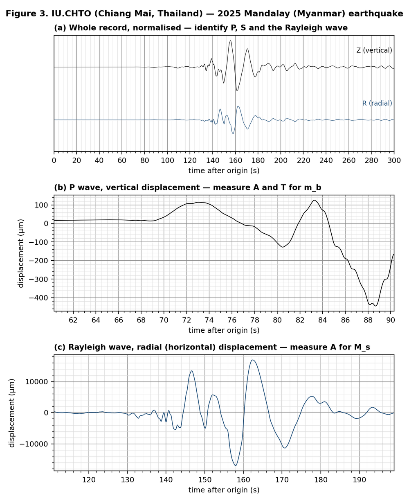
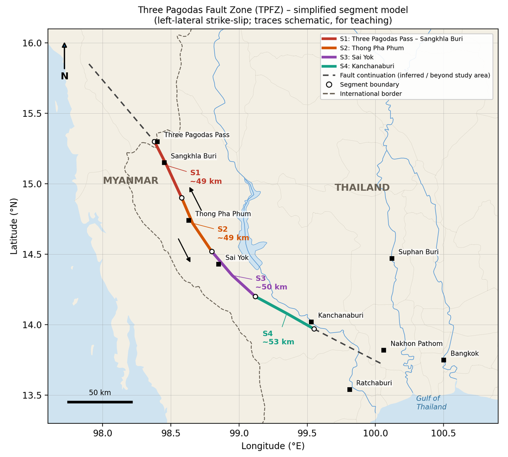

Lab Guide
การ์ด Lab
8 Lab ต่อกันใน EQ Fact Sheet ไฟล์เดียว ทำทีละขั้น ดูช่อง ควรเห็น ก่อนไปขั้นถัดไป
วิธีอ่านการ์ด
- ป้าย Google Sheets · ช่อง … = คลิกช่องนั้น วางสูตร กด Enter
- ป้าย Colab · เซลล์โค้ด = กด + Code วาง แล้วกด Shift+Enter
- ตัวเลขในช่องควรเห็นคำนวณจากข้อมูลจริงเมื่อ 21 พ.ย. 2569 ค่าที่อ่านจากรูปด้วยตาคลาดได้ ±10%
ก่อนเริ่ม
Import EQ_FactSheet_KAED343.xlsx เข้า Google Sheets ครั้งเดียว แล้วใช้ไฟล์นั้นตลอด 8 Lab แต่ละ Lab มีแท็บของตัวเอง และทุก Lab เติมคอลัมน์ในแท็บ Summary
| Lab | Fact Sheet ของคุณจะมี | เครื่องมือ | บทเรียน |
|---|---|---|---|
| 1 | ML จากข้อมูล DMR · Mw ของแม่ลาว | Sheets | 1.2–1.3 |
| 2 | mb · Ms · พลังงาน ของมัณฑะเลย์ที่ CHTO | Sheets + รูป | 1.3, 1.5 |
| 3 | เวลาเกิดและจุดศูนย์กลางแม่ลาว | Sheets + แผนที่ | 1.4 |
| 4 | PSD · microseism · noise กลางวัน/กลางคืน | Colab | 2.1–2.3 |
| 5 | GMPE ที่เหมาะสม · PGA · MMI กรุงเทพฯ | Colab | 2.4–2.5 |
| 6 | ค่า b · คาบการเกิดซ้ำ · ความน่าจะเป็น | Colab | 3.2–3.4 |
| 7 | การสั่นพ้องของอาคาร · ข้อเสนอลดผลกระทบ | Sheets | 3.6 |
| 8 | M สูงสุดของรอยเลื่อนเจดีย์สามองค์ · MCE ของเขื่อน | Sheets + แผนที่ | 3.5 |
Lab 1 · ML ของแผ่นดินไหวเล็ก และ Mw ของแผ่นดินไหวแม่ลาว 2014
แท็บ Lab1 ของ EQ Fact Sheet ที่คำนวณ ML จากข้อมูลจริงของกรมทรัพยากรธรณี และ Mw ของแม่ลาวสองวิธี
- เวลา
- ประมาณ 40 นาที
- ส่งงาน
- ไฟล์ Fact Sheet ที่แท็บ Lab1 และแถว Mae Lao ครบ
- ต่อยอดจาก
- จุดเริ่มต้น · ใช้บทเรียนหัวข้อ 1.2–1.3
การ์ดขั้นตอน
ดาวน์โหลด EQ_FactSheet_KAED343.xlsx เปิดใน Google Sheets (File → Import → Upload) แล้วไปที่แท็บ Lab1_ML
ตาราง 6 แถว: สถานี VNLP (2 แถว) PAYA BHSP NGLP PHRA พร้อม Δ (km) A (nm) และ h = 19.2 km · คอลัมน์ R_km และ ML ยังว่าง
ไม่ได้ผล? ดูวิธีแก้
คำนวณระยะทางถึงจุดกำเนิด R = √(Δ² + h²) ในคอลัมน์ F (หัวข้อ 1.2)
Google Sheets · แท็บ Lab1_ML ช่อง F2วางในช่องนั้น กด Enter แล้วลากมุมขวาล่างของช่องลงจนสุดตาราง
=SQRT(C2^2+E2^2)VNLP 27.8 km · PAYA 45.3 · BHSP 52.1 · NGLP 79.7 · PHRA 117.6
ไม่ได้ผล? ดูวิธีแก้
คำนวณ ML ของแต่ละสถานี ด้วยสูตร Hutton & Boore (IASPEI)
Google Sheets · แท็บ Lab1_ML ช่อง G2วางในช่องนั้น กด Enter แล้วลากมุมขวาล่างของช่องลงจนสุดตาราง
=LOG10(D2)+1.11*LOG10(F2)+0.00189*F2-2.09VNLP HZ 1.92 · VNLP HN 2.12 · PAYA 0.97 · BHSP 1.06 · NGLP 2.10 · PHRA 1.99
ไม่ได้ผล? ดูวิธีแก้
หา ML ของเหตุการณ์ เป็นค่าเฉลี่ยและมัธยฐานของ 6 สถานี แล้วเทียบกับแค็ตตาล็อก DMR (ML 1.7)
Google Sheets · ช่อง G9 และ G10พิมพ์บรรทัดแรกใน G9 บรรทัดที่สองใน G10
=AVERAGE(G2:G7)
=MEDIAN(G2:G7)ค่าเฉลี่ย 1.69 ≈ 1.7 ตรงกับ DMR · มัธยฐาน 1.95 · PAYA กับ BHSP ต่ำกว่าสถานีอื่นราว 1 หน่วย
ไม่ได้ผล? ดูวิธีแก้
คำนวณ Mw ของแผ่นดินไหวแม่ลาว 2014 จาก seismic moment ของ Global CMT M₀ = 2.42 × 10¹⁸ N·m (หัวข้อ 1.3)
Google Sheets · ช่องว่างใดก็ได้พิมพ์แล้วกด Enter
=2/3*(LOG10(2.42E18)-9.1)6.19 → Mw 6.2 · ทั้งที่ DMR รายงาน ML 6.7 สำหรับเหตุการณ์เดียวกัน
ไม่ได้ผล? ดูวิธีแก้
ตรวจด้วยขนาดรอยเลื่อน: aftershock กระจายยาว L = 20 km ลึก W = 12 km สมมติ D = 0.35 m และ μ = 3.0 × 10¹⁰ Pa แล้วกรอกแถว Mae Lao ในแท็บ Summary
Google Sheets · ช่องว่างใดก็ได้แต่ละบรรทัดคนละช่อง
=3E10*20E3*12E3*0.35
=2/3*(LOG10(3E10*20E3*12E3*0.35)-9.1)M₀ 2.52E+18 N·m · Mw 6.20 สอดคล้องกับ GCMT · แถว Mae Lao ใน Summary มีช่อง My ML/mb/Ms = ML 6.7 (DMR) และหมายเหตุว่าทำไมต่างจาก Mw
ไม่ได้ผล? ดูวิธีแก้
Lab 2 · อ่าน seismogram ที่เชียงใหม่: mb, Ms และพลังงานของแผ่นดินไหวมัณฑะเลย์
แท็บ Lab2 ที่อ่านค่าจากคลื่นจริงด้วยตัวเอง และอธิบายได้ว่าทำไม mb, Ms, Mw ไม่เท่ากัน
- เวลา
- ประมาณ 45 นาที
- ส่งงาน
- รูป seismogram ที่ขีดยอด/ท้องที่ใช้ + แท็บ Lab2
- ต่อยอดจาก
- Lab 1 (ใช้ Fact Sheet เดิม)

การ์ดขั้นตอน
เปิดรูป seismogram ที่สถานีเชียงใหม่ (IU.CHTO) ของแผ่นดินไหวมัณฑะเลย์ 2025 ด้านบน ในแผง (a) หาเวลาที่คลื่น P และ S มาถึง แล้วกรอกแท็บ Lab2_CHTO
tP ≈ 65 s (ร่องรอยเริ่มขยับ) · tS ≈ 130 s (แอมพลิจูดเพิ่มชัดบน R) · S − P ≈ 65 s (±3 s)
ไม่ได้ผล? ดูวิธีแก้
ในแผง (b) หาช่วงแกว่งที่ใหญ่ที่สุดของคลื่น P อ่านยอดและท้องคลื่นที่ติดกัน แล้วคำนวณ A = ½(ยอด − ท้อง) และ T = 2 × (เวลาท้อง − เวลายอด)
ยอด +125 µm ที่ 83.3 s · ท้อง −445 µm ที่ 88.7 s → 2A ≈ 570 µm · A ≈ 285 µm · T ≈ 10.8 s (A ±10%, T ±0.5 s)
ไม่ได้ผล? ดูวิธีแก้
คำนวณ mb ด้วยสูตรในชั้นเรียน (Δ = 4.25°)
Google Sheets · ช่อง mbแทน 285 และ 10.8 ด้วยค่าที่คุณอ่านได้
=LOG10(285)-LOG10(10.8)+0.01*4.25+5.9mb ≈ 7.36 (±0.1)
ไม่ได้ผล? ดูวิธีแก้
ในแผง (c) อ่านแอมพลิจูดคลื่น Rayleigh (แนวราบ) แล้วคำนวณ Ms
Google Sheets · ช่อง Msแทน 17000 ด้วย A ที่คุณอ่านได้ (µm)
=LOG10(17000)+1.66*LOG10(4.25)+2ท้อง −17,000 µm ที่ ~158 s · ยอด +16,900 µm ที่ ~162 s → A ≈ 17,000 µm · Ms ≈ 7.27 (±0.1)
ไม่ได้ผล? ดูวิธีแก้
เทียบพลังงาน E = 10^(5.24 + 1.44M) จูล จาก Ms ของคุณ กับจาก Mw = 7.71 ของ USGS (หัวข้อ 1.5)
Google Sheets · ช่อง E from Ms / E from Mwแต่ละบรรทัดคนละช่อง
=10^(5.24+1.44*7.27)
=10^(5.24+1.44*7.71)E(Ms) = 5.18E+15 J (≈ 68 ลูกระเบิดฮิโรชิมา) · E(Mw) = 2.20E+16 J (≈ 290 ลูก) · ต่างกัน 4.3 เท่า จากขนาดต่างกันแค่ 0.44
ไม่ได้ผล? ดูวิธีแก้
คำนวณ Mw จาก M₀ = 4.63 × 10²⁰ N·m ด้วยสูตรในชั้นเรียน (หน่วย dyne·cm) แล้วสรุปลงแถว Mandalay ในแท็บ Summary
Google Sheets · ช่อง Mw from M01 N·m = 10⁷ dyne·cm
=2/3*LOG10(4.63E20*1E7)-10.73Mw = 7.71 · Summary แถว Mandalay: mb 7.36 / Ms 7.27 / Mw 7.7 พร้อมเหตุผลว่าทำไม mb สูงเกิน (Δ < 20°) และ Ms ต่ำไป (คาบ ~9 s ไม่ใช่ 20 s)
ไม่ได้ผล? ดูวิธีแก้
Lab 3 · หาจุดศูนย์กลางแผ่นดินไหวแม่ลาวด้วยแผนภาพ Wadati
แท็บ Lab3 และแผนที่ที่วาดวงกลม 6 วง ระบุตำแหน่งได้ห่างจาก USGS ไม่เกิน ~15 km
- เวลา
- ประมาณ 50 นาที
- ส่งงาน
- รูปถ่ายแผนที่ที่วาดวงกลม + แท็บ Lab3
- ต่อยอดจาก
- Lab 2

การ์ดขั้นตอน
ไปที่แท็บ Lab3_Wadati แปลงเวลาคลื่น P และ S ของ 16 สถานีเป็นวินาทีนับจาก 11:08:00 UTC
Google Sheets · ช่อง D2 และ E2บรรทัดแรกใน D2 บรรทัดที่สองใน E2 แล้วลากลงถึงแถว 17
=(TIMEVALUE(B2)-TIME(11,8,0))*86400
=(TIMEVALUE(C2)-TIMEVALUE(B2))*86400NGLP: D = 62.26 · E (tS − tP) = 15.07 · MUKA: 148.71 · 79.29
ไม่ได้ผล? ดูวิธีแก้
ทำแผนภาพ Wadati: แทรกกราฟ Scatter แกน x = D (tP) แกน y = E (tS − tP) แล้วหาความชันและจุดตัดแกน
Google Sheets · ช่อง G2 และ G3บรรทัดแรกใน G2 บรรทัดที่สองใน G3
=SLOPE(E2:E17,D2:D17)
=INTERCEPT(E2:E17,D2:D17)จุด 16 จุดเรียงเป็นเส้นตรง · slope = 0.753 → Vp/Vs = 1 + slope = 1.75 · intercept = -32.82
ไม่ได้ผล? ดูวิธีแก้
หาเวลาเกิด t₀ ที่เส้นตัด S − P = 0 แล้วเทียบกับ USGS (11:08:43.4)
Google Sheets · ช่อง G4พิมพ์แล้วกด Enter
=-G3/G2t₀ = 43.6 s → 11:08:43.6 UTC ห่างจาก USGS 0.2 s
ไม่ได้ผล? ดูวิธีแก้
คำนวณระยะจากสถานีถึงจุดเหนือศูนย์ (Δ) ของ 6 สถานีที่ใกล้ที่สุด: R = 6.2 × (tP − t₀) และ Δ = √(R² − 10²)
Google Sheets · ช่อง F2 (เฉพาะแถว NGLP LAMP SMCM NAN PMMH MJCM)วางในช่องนั้น กด Enter แล้วลากมุมขวาล่างของช่องลงจนสุดตาราง
=SQRT((6.2*(D2-$G$4))^2-10^2)NGLP 115.3 km · NAN 136.5 · SMCM 139.1 · LAMP 139.5 · PMMH 160.7 · MJCM 194.7
ไม่ได้ผล? ดูวิธีแก้
พิมพ์แผนที่สถานี (map_maelao_print.png) ตั้งวงเวียนตาม scale bar 100 km แล้ววาดวงกลมรัศมี Δ รอบ 6 สถานี
วงกลมตัดกันบริเวณ 19.76°N 99.70°E (±0.05°) ห่างจาก USGS (19.66°N 99.67°E) ราว 12 km
ไม่ได้ผล? ดูวิธีแก้
สรุปลงแท็บ Summary แถว Mae Lao: ตำแหน่งที่หาได้ และอธิบายว่าทิศใดเชื่อถือได้น้อยเพราะสถานีอยู่ด้านใต้ทั้งหมด (azimuthal gap ≈ 200°)
ช่อง My epicentre = 19.76°N 99.70°E · หมายเหตุว่าแนวเหนือ–ใต้คลาดได้มาก ต้องมีสถานีฝั่งเมียนมาหรือลาวช่วย
ไม่ได้ผล? ดูวิธีแก้
Lab 4 · ความถี่ของคลื่นและ noise ที่สถานีเชียงใหม่ (Colab)
กราฟ PSD ของ CHTO ที่แยก microseism, noise จากมนุษย์ และสัญญาณแผ่นดินไหวได้ด้วยตัวเลข dB
- เวลา
- ประมาณ 40 นาที
- ส่งงาน
- รูป chto_psd.png + แท็บ Lab4
- ต่อยอดจาก
- Lab 3 · ใช้ dB และความถี่จากครึ่งแรกของวิชา
การ์ดขั้นตอน
เปิด Google Colab อัปโหลด Lab4_Frequency_CHTO.ipynb (File → Upload notebook) หรือสร้าง Notebook ใหม่ แล้วติดตั้ง ObsPy
Colab · เซลล์โค้ดวางในเซลล์ใหม่ แล้วกด Shift+Enter
!pip -q install obspyรันเสร็จใน ~30 วินาที ไม่มีข้อความสีแดง
ไม่ได้ผล? ดูวิธีแก้
ดาวน์โหลดข้อมูลคลื่นแนวดิ่ง 1 ชั่วโมงตอนกลางคืน (01:00 น. 28 มี.ค. 2568 เวลาไทย ก่อนเกิดแผ่นดินไหว) จากสถานี CHTO แล้วคำนวณ PSD
Colab · เซลล์โค้ดวางในเซลล์ใหม่ แล้วกด Shift+Enter
from obspy.clients.fdsn import Client
from obspy import UTCDateTime
from obspy.signal.spectral_estimation import get_nlnm, get_nhnm
from scipy.signal import welch
import numpy as np, matplotlib.pyplot as plt
client = Client("IRIS")
def psd(start, minutes=60, loc="00"):
t = UTCDateTime(start)
st = client.get_waveforms("IU", "CHTO", loc, "BHZ", t, t + minutes*60, attach_response=True)
st.merge(fill_value=0)
tr = st[0]
tr.remove_response(output="ACC", pre_filt=(0.002, 0.004, 15, 18))
f, p = welch(tr.data, fs=tr.stats.sampling_rate, nperseg=2**13)
return f[1:], 10*np.log10(p[1:]), tr
def at(fq, f, db):
return round(float(db[np.argmin(abs(f - fq))]))
f_n, night, tr = psd("2025-03-27T18:00:00") # 01:00 น. เวลาไทย
print(tr.id, tr.stats.sampling_rate, "Hz,", tr.stats.npts, "samples")IU.CHTO.00.BHZ 40.0 Hz, 144000 samples
ไม่ได้ผล? ดูวิธีแก้
เทียบ noise ของ CHTO กับแบบจำลอง noise ต่ำสุดและสูงสุดของโลก (NLNM / NHNM) และหายอด microseism (หัวข้อ 2.3)
Colab · เซลล์โค้ดวางในเซลล์ใหม่ แล้วกด Shift+Enter
Tl, Nl = get_nlnm(); Th, Nh = get_nhnm()
lo = lambda fq: round(float(np.interp(1/fq, Tl[::-1], Nl[::-1])))
hi = lambda fq: round(float(np.interp(1/fq, Th[::-1], Nh[::-1])))
for fq in [0.01, 0.2, 1, 10]:
print(f"{fq:>5} Hz CHTO {at(fq, f_n, night)} dB NLNM {lo(fq)} NHNM {hi(fq)}")
band = (f_n > 0.05) & (f_n < 1)
fpk = f_n[band][np.argmax(night[band])]
print(f"microseism peak {fpk:.2f} Hz = period {1/fpk:.1f} s")0.2 Hz CHTO -136 dB NLNM -141 NHNM -98 · 10 Hz CHTO -147 dB NLNM -168 NHNM -92 · microseism peak 0.24 Hz = period 4.2 s
ไม่ได้ผล? ดูวิธีแก้
ดาวน์โหลดช่วงกลางวัน 13:00 น. ของวันเดียวกัน แล้วเทียบกับกลางคืนทีละความถี่
Colab · เซลล์โค้ดวางในเซลล์ใหม่ แล้วกด Shift+Enter
f_d, day, _ = psd("2025-03-27T06:00:00") # 13:00 น. เวลาไทย
for fq in [0.2, 1, 5, 10]:
print(f"{fq:>5} Hz night {at(fq, f_n, night)} day {at(fq, f_d, day)} diff {at(fq, f_d, day) - at(fq, f_n, night):+d} dB")0.2 Hz ... diff +3 dB · 1 Hz ... diff +0 dB · 5 Hz ... diff +8 dB · 10 Hz ... diff +17 dB → noise จากกิจกรรมมนุษย์อยู่ที่ความถี่สูง
ไม่ได้ผล? ดูวิธีแก้
ดาวน์โหลดแผ่นดินไหวมัณฑะเลย์ 10 นาที จากเซนเซอร์ตัวที่สอง (location 10 เพราะตัวหลักบันทึกเกินช่วง) แล้วหา signal-to-noise ratio
Colab · เซลล์โค้ดวางในเซลล์ใหม่ แล้วกด Shift+Enter
f_q, quake, trq = psd("2025-03-28T06:21:30", minutes=10, loc="10")
print(f"max vertical acceleration {abs(trq.data).max():.3f} m/s² = {abs(trq.data).max()/9.81:.4f} g")
for fq in [0.1, 1, 5]:
print(f"{fq:>5} Hz quake {at(fq, f_q, quake)} night {at(fq, f_n, night)} SNR {at(fq, f_q, quake) - at(fq, f_n, night):+d} dB")max vertical acceleration 0.075 m/s² = 0.0077 g · 0.1 Hz quake -50 night -159 SNR +109 dB · 1 Hz ... SNR +87 dB
ไม่ได้ผล? ดูวิธีแก้
วาดกราฟ PSD ทั้งสามเส้นกับ NLNM/NHNM ดาวน์โหลดรูป แล้วกรอกตัวเลขลงแท็บ Lab4_Frequency
Colab · เซลล์โค้ดวางในเซลล์ใหม่ แล้วกด Shift+Enter
fig, ax = plt.subplots(figsize=(9, 5))
ax.semilogx(f_n, night, label="night 01:00")
ax.semilogx(f_d, day, label="day 13:00")
ax.semilogx(f_q, quake, label="Mandalay M7.7, 10 min")
ax.semilogx(1/Tl, Nl, "k--", lw=1, label="NLNM / NHNM")
ax.semilogx(1/Th, Nh, "k--", lw=1)
ax.set(xlim=(0.005, 18), ylim=(-200, -30), xlabel="Frequency (Hz)",
ylabel="PSD (dB rel. 1 (m/s²)²/Hz)", title="IU.CHTO BHZ")
ax.grid(True, which="both", alpha=.3); ax.legend()
plt.savefig("chto_psd.png", dpi=150, bbox_inches="tight")กราฟเหมือนรูปที่ 2.2 ในบทเรียน: เส้นแผ่นดินไหวอยู่สูงกว่า noise 80–110 dB · เส้นกลางวันแยกจากกลางคืนเหนือ ~2 Hz · ไฟล์ chto_psd.png ในแผงไฟล์ทางซ้าย
ไม่ได้ผล? ดูวิธีแก้
Lab 5 · ความรุนแรง: PGA จริงเทียบกับสมการทำนาย (GMPE)
ตาราง residual ที่บอกได้ว่าสมการไหนใช้กับแผ่นดินไหวไหนได้ และ MMI ที่กรุงเทพฯ
- เวลา
- ประมาณ 45 นาที
- ส่งงาน
- รูป PGA–ระยะทางของมัณฑะเลย์ + แท็บ Lab5
- ต่อยอดจาก
- Lab 4
การ์ดขั้นตอน
ดาวน์โหลด GMPE_lab_bundle.zip แตกไฟล์ เปิด PGA_GMPE_ShakeMap.ipynb ใน Colab แล้วอัปโหลดไฟล์ข้อมูล 4 ไฟล์ที่เหลือเข้าแผงไฟล์ (ไอคอนโฟลเดอร์ทางซ้าย)
แผงไฟล์มี PGA_Mandalay2025.csv · Mandalay2025_rupture_trace.csv · PGA_phan2014_GMP.xlsx · thai_borders.csv
ไม่ได้ผล? ดูวิธีแก้
รันทุกเซลล์ด้วย Runtime → Run all โดยใช้ค่าเริ่มต้น EVENT = 'MaeLao2014'
Mae Lao, Chiang Rai, 5 May 2014 M 6.3 21 stations · Best fit (lowest RMS): 8 Sadigh et al. (1997) (RMS = 0.29)
ไม่ได้ผล? ดูวิธีแก้
เปลี่ยนเหตุการณ์เป็นมัณฑะเลย์ 2025 ในเซลล์ Settings แล้ว Run all ใหม่
Colab · เซลล์ Settingsแก้บรรทัดแรกของเซลล์ Section 1
EVENT = 'Mandalay2025'Mandalay, Myanmar, 28 Mar 2025 M 7.7 9 stations · R_jb check vs ShakeMap R_rup: max difference 0.7 km · Best fit (lowest RMS): 7 Boore et al. (1993), larger comp. (RMS = 0.21)
ไม่ได้ผล? ดูวิธีแก้
ดูตาราง residual (Section 5) ของแบบจำลองที่ 8 (Sadigh 1997 ซึ่งดีที่สุดสำหรับแม่ลาว) ที่สถานีกรุงเทพฯ 4 สถานี (หัวข้อ 2.4)
Colab · เซลล์โค้ดเพิ่มเซลล์ใหม่ใต้ Section 5
RES[[7, 8]].round(2)BKSI 1.13 · KMUA 1.19 · PTNA 1.12 · PWSA 1.21 → แบบจำลองนี้ทำนายต่ำกว่าจริงราว 10^1.16 ≈ 14 เท่า ขณะที่แบบจำลองที่ 7 ต่างแค่ 0.14–0.23
ไม่ได้ผล? ดูวิธีแก้
เปลี่ยน SITE_CLASS = 'soil' (ดินอ่อน) แล้ว Run all ดูว่าแบบจำลองไหนดีที่สุดเมื่อคิดผลของชั้นดิน
Colab · เซลล์ Settingsแก้บรรทัด SITE_CLASS
SITE_CLASS = 'soil'Best fit (lowest RMS): 2 Campbell (1981) (RMS = 0.26) · residual กรุงเทพฯ ของแบบจำลองที่ 7 ลดเหลือ −0.03 ถึง −0.11
ไม่ได้ผล? ดูวิธีแก้
แปลง PGA ที่กรุงเทพฯ (≈ 0.021 g) เป็นความรุนแรง MMI ด้วย Wald et al. (1999) แล้วกรอกแท็บ Lab5_GMPE และคอลัมน์ PGA / MMI / Best GMPE ใน Summary
Colab · เซลล์โค้ดฟังก์ชัน pga2mmi อยู่ใน Section 6 แล้ว
print(round(float(pga2mmi(0.021)), 1), round(float(pga2mmi(0.623)), 1))3.9 8.5 → กรุงเทพฯ MMI ≈ IV (รู้สึกได้ในอาคาร) · NPW (เนปิดอว์ ห่างรอยเลื่อน 3 km) MMI ≈ VIII–IX
ไม่ได้ผล? ดูวิธีแก้
Lab 6 · คาบการเกิดซ้ำและความน่าจะเป็น: รอยเลื่อนสะกาย
ค่า b, คาบการเกิดซ้ำ และความน่าจะเป็นใน 50 ปี จากแค็ตตาล็อกจริง เทียบกับวิธีงบการเลื่อน
- เวลา
- ประมาณ 40 นาที
- ส่งงาน
- กราฟ Gutenberg–Richter + แท็บ Lab6
- ต่อยอดจาก
- Lab 5
การ์ดขั้นตอน
ใน Colab อัปโหลด Lab6_Recurrence_Sagaing.ipynb หรือสร้าง Notebook ใหม่ แล้วดึงแค็ตตาล็อก USGS ของรอยเลื่อนสะกายก่อนเกิดเหตุ 2025
Colab · เซลล์โค้ดวางในเซลล์ใหม่ แล้วกด Shift+Enter
import pandas as pd, numpy as np, matplotlib.pyplot as plt
url = ("https://earthquake.usgs.gov/fdsnws/event/1/query?format=csv"
"&starttime=1976-01-01&endtime=2025-03-27"
"&minlatitude=19&maxlatitude=24.5&minlongitude=95&maxlongitude=97"
"&minmagnitude=4.0&maxdepth=40")
cat = pd.read_csv(url)
years = (pd.Timestamp("2025-03-27") - pd.Timestamp("1976-01-01")).days / 365.25
print(len(cat), "events in", round(years, 1), "years")204 events in 49.2 years
ไม่ได้ผล? ดูวิธีแก้
นับจำนวนแผ่นดินไหวสะสม N(≥M) ทุก 0.5 หน่วย (หัวข้อ 3.2)
Colab · เซลล์โค้ดวางในเซลล์ใหม่ แล้วกด Shift+Enter
Ms = np.arange(4.0, 7.01, 0.5)
N = np.array([(cat.mag >= m).sum() for m in Ms])
print(pd.DataFrame({"M>=": Ms, "N": N, "N/yr": (N/years).round(3)}).to_string(index=False))M≥4.5 120 (2.437/ปี) · M≥6.0 4 · M≥7.0 1 (0.020/ปี)
ไม่ได้ผล? ดูวิธีแก้
คำนวณ b-value ด้วยวิธี maximum likelihood ของ Aki (Mc = 4.5)
Colab · เซลล์โค้ดวางในเซลล์ใหม่ แล้วกด Shift+Enter
Mc, dM = 4.5, 0.1
m = cat.mag[cat.mag >= Mc]
b = np.log10(np.e) / (m.mean() - (Mc - dM/2))
a = np.log10(len(m)/years) + b*Mc
print(f"N = {len(m)} b = {b:.2f} ± {b/np.sqrt(len(m)):.2f} a = {a:.2f} (per year)")N = 120 b = 1.01 ± 0.09 a = 4.95 (per year)
ไม่ได้ผล? ดูวิธีแก้
คำนวณคาบการเกิดซ้ำ T และความน่าจะเป็นใน 50 ปี (Poisson) แล้วเทียบกับระดับออกแบบ 10% ใน 50 ปี (หัวข้อ 3.3)
Colab · เซลล์โค้ดวางในเซลล์ใหม่ แล้วกด Shift+Enter
for M in [6.0, 7.0, 7.7]:
rate = 10**(a - b*M)
T = 1/rate
P50 = 1 - np.exp(-50/T)
print(f"M>={M}: {rate:.4f}/yr T = {T:.0f} yr P(50 yr) = {P50*100:.0f}%")
print("10% in 50 yr -> T =", round(-50/np.log(0.9)), "yr")M>=7.0: 0.0071/yr T = 141 yr P(50 yr) = 30% · M>=7.7: 0.0014/yr T = 720 yr P(50 yr) = 7% · 10% in 50 yr -> T = 475 yr
ไม่ได้ผล? ดูวิธีแก้
วาดกราฟ Gutenberg–Richter แล้วเทียบ T ของ M7.7 จากแค็ตตาล็อก (720 ปี) กับวิธีงบการเลื่อน T = D/V = 3.3 m ÷ 18 mm/ปี (หัวข้อ 3.4)
Colab · เซลล์โค้ดวางในเซลล์ใหม่ แล้วกด Shift+Enter
plt.semilogy(Ms, N/years, "o", label="ComCat")
mm = np.linspace(4, 8, 50); plt.semilogy(mm, 10**(a - b*mm), label=f"b = {b:.2f}")
plt.xlabel("M"); plt.ylabel("N(≥M) per year"); plt.grid(True, which="both", alpha=.3); plt.legend()
plt.savefig("gr_sagaing.png", dpi=150, bbox_inches="tight")Colab · เซลล์โค้ด
print(round(3.3 / 0.018), "yr")จุดข้อมูลเรียงตามเส้นตรง b = 1.01 บนแกน log · 183 yr → สั้นกว่าค่าจากแค็ตตาล็อกราว 4 เท่า กรอกทั้งสองค่าในแท็บ Lab6 และคอลัมน์ Return period ของ Summary
ไม่ได้ผล? ดูวิธีแก้
Lab 7 · การสั่นพ้องของอาคารสูงในกรุงเทพฯ และการลดผลกระทบ
EQ Fact Sheet ฉบับสมบูรณ์ ที่จบด้วยการจัดอันดับความเสี่ยงอาคารและข้อเสนอลดผลกระทบ
- เวลา
- ประมาณ 35 นาที
- ส่งงาน
- ไฟล์ EQ Fact Sheet ฉบับสมบูรณ์ (ทุกแท็บ)
- ต่อยอดจาก
- Lab 6
การ์ดขั้นตอน
ไปที่แท็บ Lab7_Resonance (อาคารสูง 8 หลังในกรุงเทพฯ ที่วัดคาบหลังแผ่นดินไหว 2025) คำนวณ T/N และคาบตามกฎหัวแม่มือ 0.1N
Google Sheets · ช่อง D2 และ E2บรรทัดแรกใน D2 บรรทัดที่สองใน E2 แล้วลากลง
=C2/B2
=0.1*B2H1 (25 ชั้น) T/N 0.112 · R2 (45 ชั้น) 0.050 · R4 (79 ชั้น) 0.072 · 0.1N ของ R4 = 7.9 s แต่วัดได้ 5.66 s
ไม่ได้ผล? ดูวิธีแก้
หาค่า k ที่เหมาะกับอาคารไทย ในสูตร T = kN (เส้นตรงผ่านจุดกำเนิด)
Google Sheets · ช่อง I2พิมพ์แล้วกด Enter
=SUMPRODUCT(B2:B9,C2:C9)/SUMSQ(B2:B9)k = 0.075 → อาคารกรุงเทพฯ ชุดนี้มีคาบสั้นกว่ากฎ 0.1N ราว 25%
ไม่ได้ผล? ดูวิธีแก้
คำนวณอัตราส่วนคาบ r = T_อาคาร / T_พื้นดิน โดยใช้คาบแอ่งดินกรุงเทพฯ 6 s (หัวข้อ 3.6)
Google Sheets · ช่อง F2วางในช่องนั้น กด Enter แล้วลากมุมขวาล่างของช่องลงจนสุดตาราง
=C2/6R4 0.94 (ใกล้ 1 = ใกล้สั่นพ้อง) · C3 0.73 · R3 0.29
ไม่ได้ผล? ดูวิธีแก้
คำนวณตัวขยายพลวัต DAF ที่ความหน่วง ζ = 2.5%
Google Sheets · ช่อง G2วางในช่องนั้น กด Enter แล้วลากมุมขวาล่างของช่องลงจนสุดตาราง
=1/SQRT((1-F2^2)^2+(2*0.025*F2)^2)R4 8.3 · C3 2.1 · C1 1.8 · R3 1.1 · ค่าสูงสุดที่เป็นไปได้ (r = 1) = 1/(2ζ) = 20
ไม่ได้ผล? ดูวิธีแก้
จัดอันดับอาคารตามความเสี่ยงสั่นพ้อง แล้วเขียนข้อเสนอลดผลกระทบ 2 ข้อลงช่อง Notes ของ Summary แถว Mandalay
อันดับ 1 คือ R4 (79 ชั้น, DAF ≈ 8) ตามด้วย C3 และ C1 · ข้อเสนอ เช่น เพิ่มความหน่วง (damper) หรือออกแบบให้คาบอาคารห่างจากคาบแอ่งดิน 6–8 s
ไม่ได้ผล? ดูวิธีแก้
Lab 8 · ขนาดสูงสุดของรอยเลื่อนเจดีย์สามองค์ด้วย Wells & Coppersmith (1994)
แท็บ Lab8 ที่ประเมิน M ของรอยเลื่อนเจดีย์สามองค์ 7 ฉากทัศน์ด้วย 3 วิธี และเลือก MCE สำหรับเขื่อนพร้อมเหตุผล
- เวลา
- ประมาณ 40 นาที
- ส่งงาน
- แท็บ Lab8_TPFZ + แถว Three Pagodas FZ ใน Summary
- ต่อยอดจาก
- Lab 1 (Mw จากขนาดรอยเลื่อน) และ Lab 6

การ์ดขั้นตอน
ไปที่แท็บ Lab8_TPFZ แล้วเปิดแผนที่รอยเลื่อนเจดีย์สามองค์ด้านบน ใช้ไม้บรรทัดเทียบกับ scale bar 50 km วัดความยาวช่วง S2 (ทองผาภูมิ) จากวงกลมขาวถึงวงกลมขาว (หัวข้อ 3.5)
ระยะตรงได้ราว 48 km (±3 km) · ตาราง Lab8_TPFZ ใช้ 49 km เพราะวัดตามแนวรอยเลื่อนที่หักมุมใกล้ทองผาภูมิ ซึ่งยาวกว่าเส้นตรงเล็กน้อย
ไม่ได้ผล? ดูวิธีแก้
คำนวณ M จากความยาวรอยแตกบนผิวดิน (SRL) ด้วยสมการ strike-slip ของ Wells & Coppersmith (1994) ทั้ง 7 แถว
Google Sheets · แท็บ Lab8_TPFZ ช่อง E2วางในช่องนั้น กด Enter แล้วลากมุมขวาล่างของช่องลงจนสุดตาราง
=5.16+1.12*LOG10(B2)S1 7.05 · S2 7.05 · S3 7.06 · S4 7.09 · S2+S3 7.40 · S1+S2+S3 7.59 · ทั้งแนว S1–S4 7.74
ไม่ได้ผล? ดูวิธีแก้
คำนวณพื้นที่รอยแตก RA = L × W (W = 15 km รอยเลื่อนตั้งดิ่ง ลึก 15 km) แล้วหา M จาก RA
Google Sheets · ช่อง D2 และ F2บรรทัดแรกใน D2 บรรทัดที่สองใน F2 แล้วลากลงทั้งสองคอลัมน์
=B2*C2
=3.98+1.02*LOG10(D2)S2: RA 735 km² · M(RA) 6.90 · S1+S2+S3: 2220 km² · 7.39 · ทั้งแนว: 3015 km² · 7.53 → M(RA) ต่ำกว่า M(SRL) ราว 0.15–0.2 ทุกแถว
ไม่ได้ผล? ดูวิธีแก้
หาช่วงความไม่แน่นอน ±1σ ของ M(SRL) โดย σ = 0.28
Google Sheets · ช่อง G2 และ H2บรรทัดแรกใน G2 บรรทัดที่สองใน H2 แล้วลากลง
=E2-0.28
=E2+0.28S2 6.77 – 7.33 (โอกาสราว 68% ที่ขนาดจริงอยู่ในช่วงนี้) · S1+S2+S3 7.31 – 7.87 · ทั้งแนว 7.46 – 8.02
ไม่ได้ผล? ดูวิธีแก้
ตรวจด้วย seismic moment: หาการเลื่อนเฉลี่ย AD จาก log AD = −6.32 + 0.90M แล้วคำนวณ M₀ = μ·RA·AD และ Mw (μ = 3 × 10¹⁰ Pa · เทคนิคเดียวกับ Lab 1 ขั้น 6)
Google Sheets · ช่อง I2, J2 และ K2บรรทัดละช่อง I2 J2 K2 แล้วลากลงทั้งสามคอลัมน์
=10^(-6.32+0.9*E2)
=3E10*D2*1E6*I2
=2/3*(LOG10(J2)-9.1)S2: AD 1.07 m · M₀ 2.35E+19 N·m · Mw 6.85 · S1+S2+S3: 3.25 m · 2.16E+20 · 7.49 · ทั้งแนว: 4.42 m · 4.00E+20 · 7.67 → สามวิธีต่างกันราว 0.2 หน่วย
ไม่ได้ผล? ดูวิธีแก้
ข้อมูลร่องสำรวจ (trench) สมมติ: บน S1 พบการเลื่อนซ้ายสูงสุดในเหตุการณ์เดียว MD = 2.0 m หา M จาก MD แล้วเลือก MCE สำหรับเขื่อนใกล้ทองผาภูมิ กรอกในแถว Three Pagodas FZ (scenario) ของแท็บ Summary
Google Sheets · ช่องว่างใดก็ได้พิมพ์แล้วกด Enter
=6.81+0.78*LOG10(2)7.04 ≈ M(SRL) ของ S1 (7.05) → การเลื่อน 2 m สอดคล้องกับการแตกทั้งช่วง S1 · คำตอบที่ปลอดภัยสำหรับเขื่อน: S1+S2+S3 M ≈ 7.6 และตรวจ +1σ ≈ 7.9 · ช่อง Notes เขียนเหตุผลและข้อจำกัด 1 ข้อ
ไม่ได้ผล? ดูวิธีแก้
ภาคผนวก: ปัญหาที่พบบ่อย
| อาการ | วิธีแก้ |
|---|---|
Sheets: #NAME? | ชื่อฟังก์ชันผิด หรือเครื่องใช้ ; คั่นอาร์กิวเมนต์ |
Sheets: #VALUE! ตอนแปลงเวลา | พิมพ์ตัวเลขวินาทีเองจากตารางในบทเรียน |
Colab: FDSNException หรือ HTTPError | เซิร์ฟเวอร์ IRIS/USGS ขัดข้องชั่วคราว รอแล้วรันใหม่ |
Colab: NameError | รันเซลล์ก่อนหน้า หรือ Runtime → Run all |
| ตัวเลขต่างจากควรเห็นเล็กน้อย | ค่าที่อ่านจากรูปคลาดได้ ±10% · แค็ตตาล็อก USGS อาจอัปเดต |